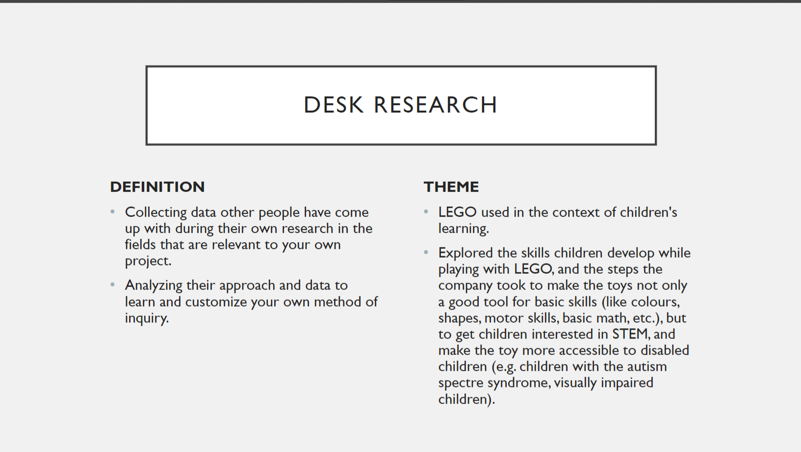

theme 03: basic ux
03.01.01 data collection
03.03.01 prototype
03.04.01 design sprint
focus learning about types of research, what kind of data collection each is used for, how to conduct, understand, process, and present them.
learning in the beginning of this theme, we focused on data collection. i've had experience with some methods during high school, but working on five one by one really highlighted the pros and cons for each one in certain situations. i further used the knowledge gained while creating the prototype and design sprint.
data collection
focus furthermore, we focused on applying those findings to create a website or app for a customer in collaboration with other teammates on the project.
learning in assignment 03.03.01, my partner and i tried to work on every aspect of the project equally - we both did a part of the research, he designed and sketched out a wireflow while i made the low-fi and hi-fi versions, he madve a style tile while i found the icons, constantly working side by side to see how we could further improve everything.
in assignment 03.04.01, which was a group assignment, we all worked alongside one another, but our roles in the project ended up clearer. the design sprint was a new concept for all of us, and we all gave ideas and suggestions, taking on different tasks we haven't before and helping out teammates. in the end, i made the prototype true to the wireflow we all came up with and improved together.
xd prototypeprocess document